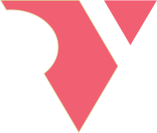
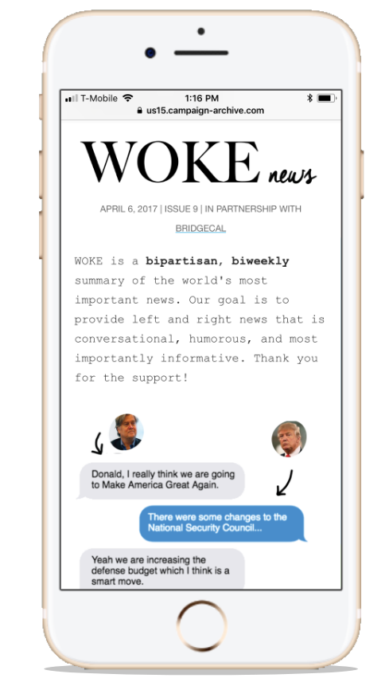
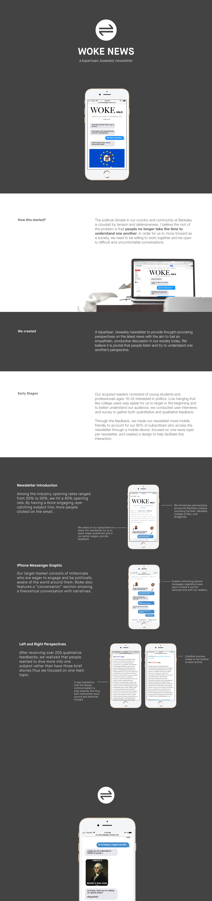

<html>
	<head>
		<title>Rebecca Yeap</title>
		<link rel="stylesheet" type="text/css" href="assets/css/bootstrap.min.css">
		<link rel="stylesheet" type="text/css" href="assets/css/wokenews.css">
		<meta name="viewport" content="width=device-width, initial-scale=1.0">
	</head>
</html>
<body>
	<div id="navbar">
		<div id="labels-container">
		<div class="headerlabels" style="display: flex;">
				<div class="about">
					<a href="about.html">ABOUT</a> 
				</div>
				<div class="work">
					<a href="work.html">WORK</a> 
				</div>
				<div class="nonwork">
					<a href="nonwork.html">WORK</a> 
				</div>
			</div>
		</div>
		<div>
			<!---->
		</div>
	</div>
	<div class= "container-fluid" id="about_block"> 
		<div class="row">
			<div class="col-md-6 offset-md-2">
				<div style="padding-top: 100px; margin-left: 50px">
					<h2>Woke News</h2>
					<p>startup | product design</p>
				</div>
				<div class="row">
				<div class="col-md-6" style="padding-top: 20px; margin-left: 50px">
					<p>Woke News is a biweekly, bipartisan newsletter which summarizes the largest news of the week in both the liberal and conservative perspective.  
					 </p>  
					<p>In May 2017, the startup was founded at UC Berkeley by a group of friends (Kaden Dippe, Yash Goenka, Jayesh Kaushik, Justin McDonald, Bean Mitchell) and I. Over a four-month period, we formed key partnerships (Cal Democrats, Berkeley College of Republicans, and BridgeUSA) and reached over 7000 subscribers with an on average 40% opening rate. This project was the first time I worked on digital product design and initially sparked my interest in human-centered design.  </p>
					</div>
				
			</div>
		</div>
		<div class="row">
			<div class="col-md-8 offset-md-2"> 
				
			</div>
			
		</div>
	</div>
		
</body>
</html>